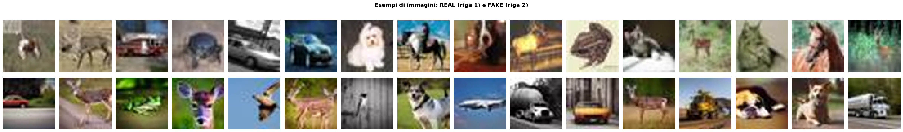

Confronto tra approcci di Machine Learning classico e Deep Learning per il rilevamento di immagini generate da intelligenza artificiale
Le immagini generate da AI vengono usate per creare notizie false, manipolare l'opinione pubblica e falsificare prove visive.
Deepfake e volti sintetici minacciano sistemi di autenticazione, reputazioni personali e fiducia nelle comunicazioni digitali.
Contenuti artistici e fotografici vengono replicati da modelli generativi senza consenso, violando i diritti d'autore.
Il volume di immagini sintetiche online è cresciuto esponenzialmente dal 2022 — i modelli generativi sono oggi accessibili a chiunque.

Spettro REAL: energia distribuita naturalmente, decadimento radiale graduale dal centro verso i bordi.
Spettro FAKE: pattern simile ma con differenze strutturali nelle frequenze medie — traccia del processo generativo.
Differenza (REAL−FAKE): le zone blu (FAKE > REAL) rivelano eccesso di energia nelle medie frequenze — impronta del modello AI.
Senza struttura spaziale, i pixel grezzi offrono informazioni ridotte al classificatore — ogni pixel è trattato come feature indipendente, ignorando le relazioni locali.
Solo il classificatore FC è addestrabile. Layer 1–4 restano congelati con pesi ImageNet. Il modello impara rapidamente a separare le feature estratte.
Si sblocca Layer 4: fine-tuning sul dominio AI a livello di feature di alto livello. Learning rate ridotto per evitare catastrophic forgetting.
Fase 1 (epoch 1–3) — FC head: loss scende da 0.37 a 0.29. Accuracy stabile all'83%. Il modello sfrutta i pesi ImageNet congelati.
salto di performance significativo. Val loss → 0.1186 alla migliore epoch. Gap train/val minimo.
Best checkpoint: epoch 5 (fase 2) · val loss 0.1186 · val acc 95.75% · test acc 95.78%
| Modello | Accuracy | AUC-ROC | F1 | Train time |
|---|---|---|---|---|
| 64.2% | 0.6877 | 0.641 | 0.8 s | |
| Random Forest | 80.2% | 0.8791 | 0.802 | 6.4 s |
| ResNet-18 | 95.78% | 0.9962 | 0.9578 | ~12 min |
FAKE recall 99.00% — il modello è estremamente preciso nel rilevare immagini AI, minimizzando i falsi negativi a soli 100 su 10.000 campioni FAKE.